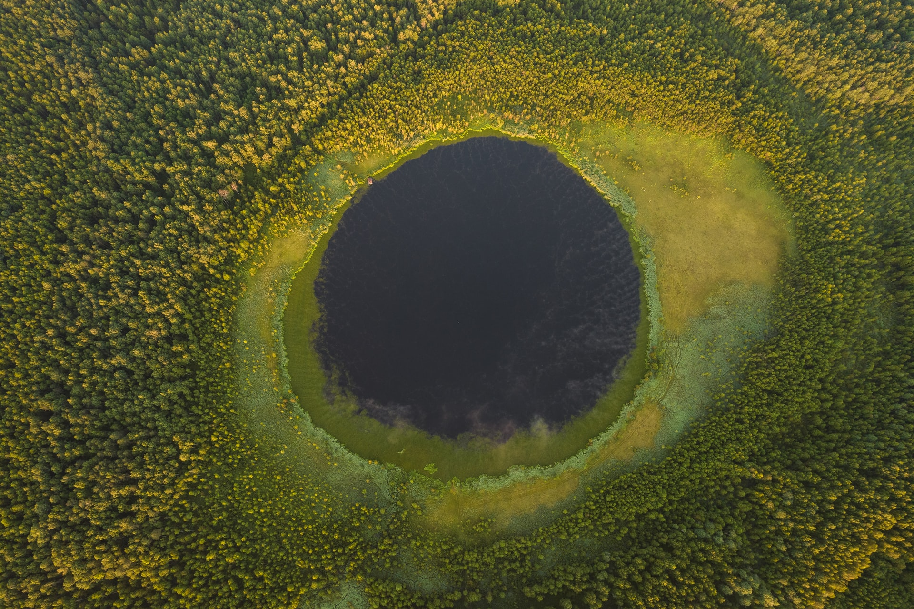

Hypertext Markup Language (HTML) is the standard Markup language for creating web pages and web applications. Hi, everybody. This monday, I'm heading to Alaska for a three-day tour of the state. I've been looking forward to this for a long time. Not only because Alaska is one of the most beautiful places in a country that's full of beautiful places - but because I'll have several oppotunities to meet with everyday Alaskans about what's going on in their lives. I'll travel throughout the state, meeting with Alaskans who live above the Arctic Circle, with Alaska natives, and with folks who earn their livelihoods through fishing and tourism. And I expect to learn a lot.
One thing I've learned so far is that a lot of these conversations begin with climate change. And that's because Alaskans are already living with its ef7fect. More frequent and extensive wildfires. Bigger storm surges as sea ice melts faster. Some of the swiftest shoreline erosion in the world - in some places, more than three feet a year. Alaska's glaciers are melting faster too, threatening tourism and adding to rising seas. And if we do nothing, Alaskan temperatures are projected to rise between six and twelve degrees by the end of the century, changing all sorts of industries forever.